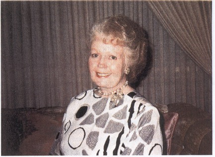
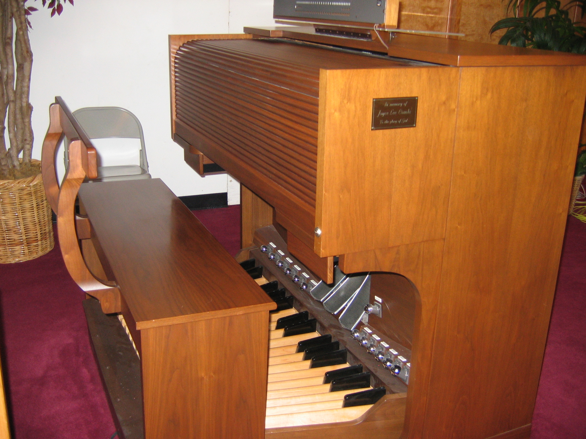
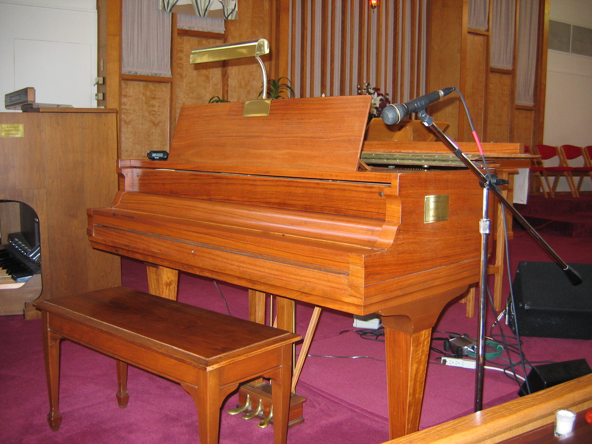
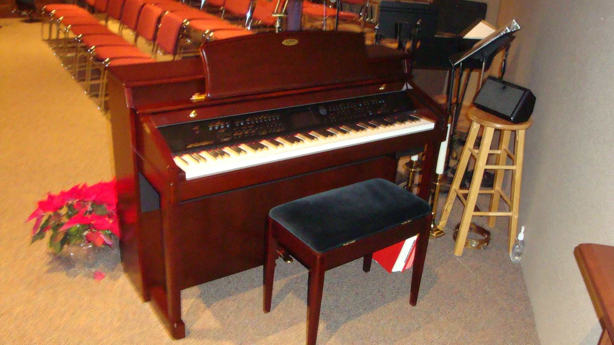

|  |
Nov. 29, 1934 to Aug. 5, 1999
Family: Joyce was the wife of Edward L. Combs and the daughter of Thelma and Donald Coash.
Relationship to St. Andrew: During her terminal illness Joyce formed a special bond with St. Andrews pastor, Reverend Tim Burchill. She was unable to attend services at St. Andrew but was associated through her husband’s attendance and supported by the prayers of the congregation.
Recognitions: Joyce was a concert pianist being part of a traveling piano duo team of “Coash and Allen” which performed widely in the United States. She also played with the Minneapolis Philharmonic Orchestra.
Memorial: A Schaaf Baby Grand Piano that Joyce owned and played was donated to St. Andrew Church and an organ fund was established which purchased the Allen Organ now in the Great Room of the new Church. The Grand Piano was refurbished by Myron Deckard and used in the Church from the time of the donation until 2011. In 2011 the Grand Piano was sold and the funds were applied to the purchase of the digital piano that was also placed in the Great Room.
About the Piano: Adam Schaaf patented his piano in May of 1908 in Chicago, Illinois. The Schaaf baby grand piano in the St. Andrew sanctuary was built in 1923. Donald Coash, a Gary steel worker, was able to purchase this piano in 1943 for his daughter when a Crown Point family learned of the potential talent of Joyce and agreed to sell the piano to her family on very favorable terms. It is all natural wood and was restored to its present beauty by Myron Deckard, a member of the St. Andrew Congregation, in the fall of 1999.
The Organ: The renaissance Series 3-manual model R-300 Allen Organ produces the most realistic pipe organ sound available from a pipe less organ. The Renaissance 3-manual model along with the MIDI attachment offers almost limitless versatility and flexibility, assuring sounds that will fit specific worship styles and tastes. The console is expertly crafted of solid walnut and the nine speakers are institutional-quality and designed to emulate the massive air movements of cathedral pipe organs.
The piano and organ were dedicated Oct. 8, 2000 with a Musical Celebration at St. Andrew United Methodist Church. The musicians were Jan Coleman, LuAnn Boggess, Ellen Byers, Doris Weis, Lisa Tally and Mary Warren.
Joyce Lee Coash was born on Thanksgiving Day, November 29, 1934 to Thelma and Donald Coash of Crown Point, Indiana. Bedridden for several months at the age six, she turned to music and became a very accomplished pianist and later learned to play the organ. She often substituted for the pianist or organist at her home church, the First Presbyterian Church of Crown Point. An audition for Dr. Rudolph Gantz, president of the Chicago Music College, resulted in her receiving a scholarship to study under his direction.
Following graduation from Crown Point High School in 1952 she attended the Chicago Music College. While in Chicago she also played in the Chicago Civic Symphony. In 1954 she moved to Minneapolis, Minnesota where she studied organ at the University of Minnesota. She became a partner in the piano duo team of “Coash and Allen”, performing all over the United States until her partner, James Allen suffered a stroke. Without a partner, Joyce continued her musical career by playing with a Minneapolis Philharmonic, teaching at the Minneapolis Conservatory of Music, giving private lessons, and serving as organist for a church in St. Paul.
She enrolled in the Art Education Program at Indiana University in 1969 and upon graduating from Indiana University in 1969 she became an art teacher and art department chairman at the Tippecanoe Junior High School when it opened. While being interviewed for the position she met Edward Lee Combs, a member of the interview team. They were married on December 28, 1969, in Crown Point, Indiana.
At the time Joyce was diagnosed with cancer, she was not affiliated with any church in the Lafayette area. Through the influence of her friend, Lorraine Edwards, Pastor Burchill of the St. Andrew United Methodist Church became her spiritual mentor.
Knowing that her illness was terminal, Joyce asked Pastor Burchill if, although she was not a member of St. Andrew, he would officiate at her funeral service. When he agreed, an immense burden was lifted from her mind. She was emphatic that she did not want a lot of flowers and instead requested that contributions made in her memory go to an organ fund at St. Andrew United Methodist Church.

Electronic Organ at 333 Meridian St. in June of 2007

Grand Piano at 333 Meridian St. in June of 2007

Digital Piano in Great Room in 2012